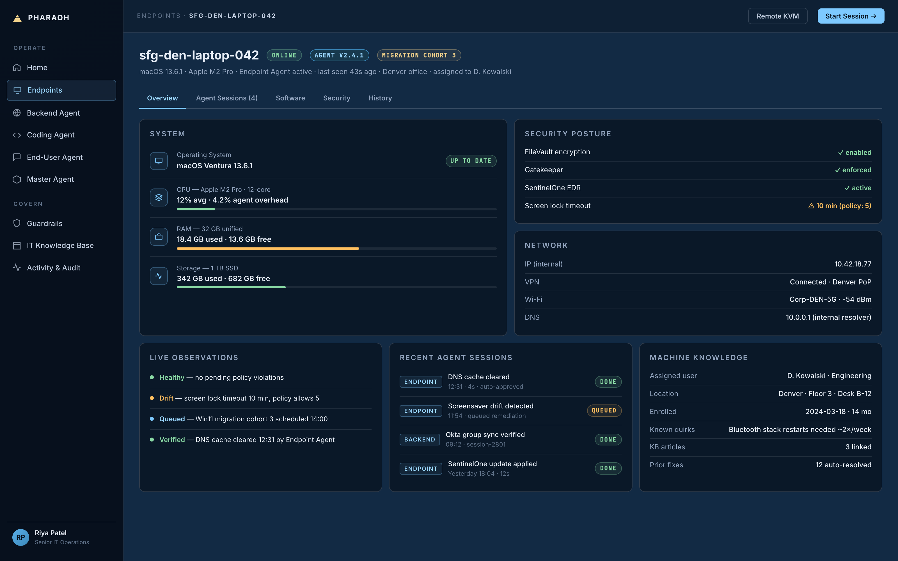
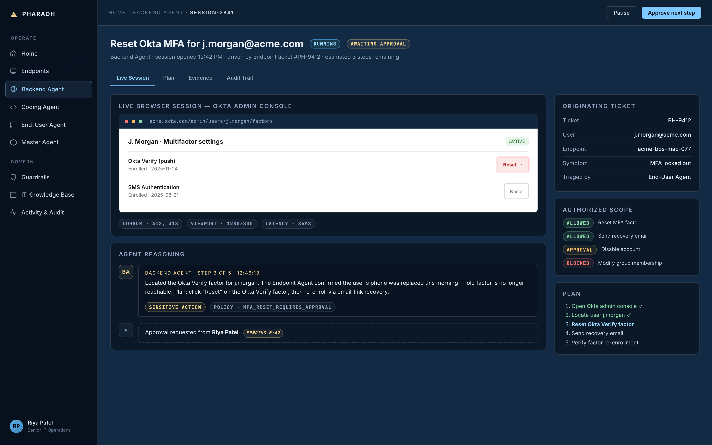
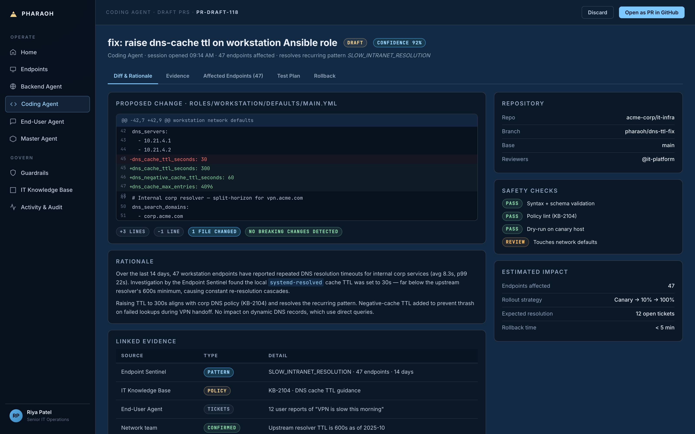
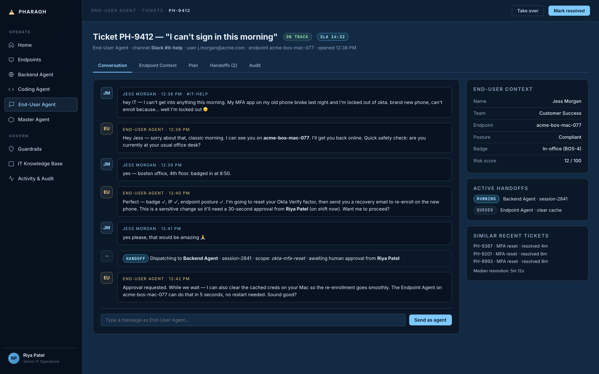
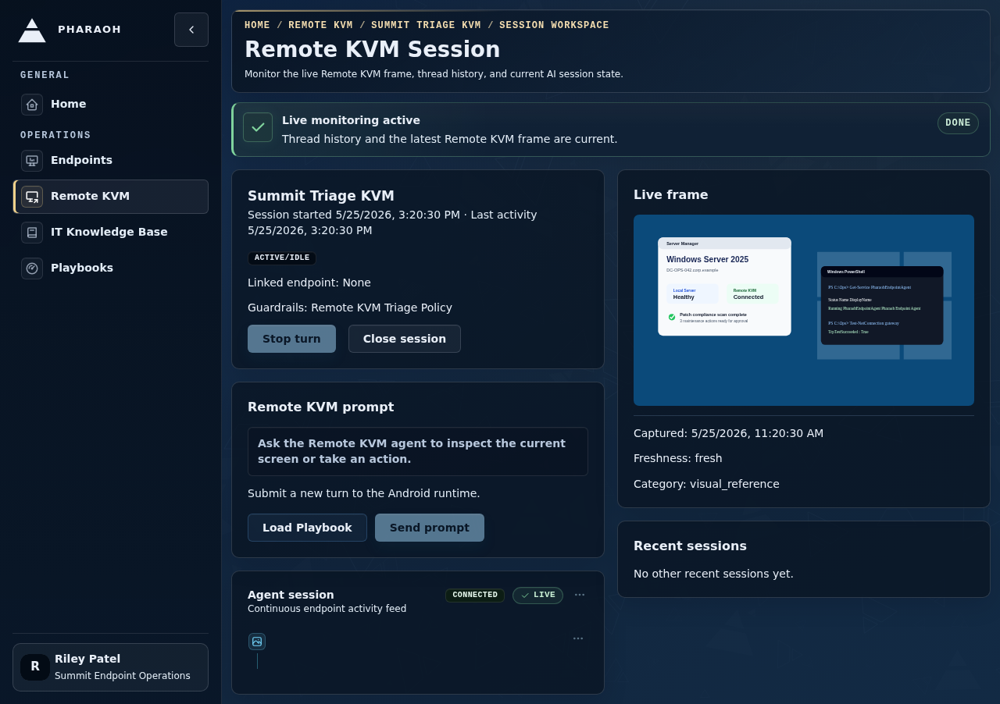
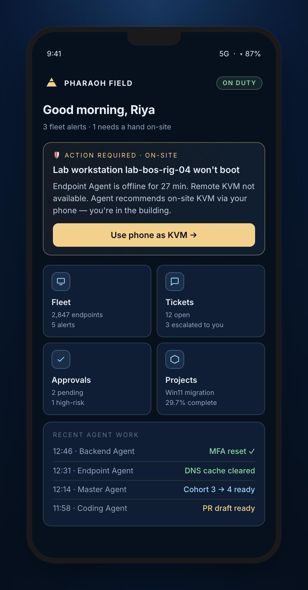

Building the technology to make WELL's IT operations fully autonomous — the most operationally advanced fleet in healthcare.
Bradley Arsenault
Part I
The Revolution in Software Development.
The view from inside
The steamroller we all saw coming.
For a decade I'd been working in AI. The capability curves were exponential. The headlines were screaming the same thing every week — "AI will replace developers by 2026."
Not theoretically terrifying — personally terrifying. Coding wasn't just my job. It was my craft, my identity, the thing I'd given a decade of my life to. And the technology I loved was training itself to make me obsolete.
The question wasn't if the steamroller would arrive. It was whether there'd be anything left for people like me when it did.
HEADLINES · 2024
"AI will write 90% of code within two years"
"The end of the human programmer"
"Software engineers brace for mass layoffs"
"Junior devs already being phased out"
— every tech publication, every Monday morning
Then the threshold was crossed
It went from curiosity to revolution.
UNTIL EARLY 2025
Promising. Not quite working.
I'd been watching coding agents for years. We all tried them. They almost worked — not quite enough to bet on.
THEN: CLAUDE CODE
The threshold crossed.
Agents started writing code faster and more accurately than almost any human. Suddenly — not "promising" — actually working in practice.
DEALYZER · 2025
Six-month miracle.
You all know Dealyzer — shipped in six months, with a level of polish and accuracy that was impossible a year ago.
The most core part of my job was replaced — and I moved to a higher level. More strategic, more valuable to the business, dramatically more gratifying. This isn't displacement. This is the most empowered I've ever felt as a builder.
But here's what I couldn't stop thinking about
Where is the Claude Code
for IT?
Engineers got a transformative co-pilot. IT teams are still running PowerShell scripts through opaque MDM tooling that break 70% of the time.
Where existing tools fall short
Nothing on the market is what WELL Health IT actually needs.
Claude Code / Codex
OpenClaw / Computer Use
Traditional RMM / MDM
AIOps (Dynatrace, etc.)
Pharaoh
LLM-driven, agentic
✓
✓
×
partial
✓
Operates on real endpoints (not source code)
×
✓
✓
×
✓
Heterogeneous fleet (Win / Mac / Linux)
×
single host
✓
✓
✓
Enterprise RBAC + tenant isolation
×
×
✓
✓
✓
Policy-gated automation with approvals
×
×
basic
×
✓
Closed-loop self-healing (detect→fix→verify)
×
×
×
detect only
✓
End-user chat triage with autonomous resolution
×
×
×
×
✓
Code / IaC integration for systemic fixes
code only
×
×
×
✓
Durable / hardware access (KVM, OOB)
×
×
×
×
✓
Full audit trail of every agent action
code only
×
basic
✓
✓
10 / 10
The gap
Nobody is building what Enterprise IT teams actually need — a comprehensive platform for autonomous IT, with the policy controls, guardrails, and military-grade security built into the core.
In my personal time
I've been building the solution. Introducing Pharaoh.
On my own time, outside of work, I've been building the technology to make IT operations fully autonomous.
Months of focused engineering. A real architecture — endpoint agents, self-healing loops, policy enforcement, the works. It's now ready for production testing.
I'm bringing it to WELL first — because you have the scale, the urgency, and the vision to be its founding sponsor and anchor deployment. If WELL backs this, WELL shapes what it becomes.
getpharaoh.com
The transformation
From where WELL IT is today to where it could be in 12 months.
TODAY
IT in survival mode.
×
Repetitive tickets eat the majority of IT time
×
Drift creeps in unnoticed across sites
×
Multi-site, multi-clinic = multi-headache
×
Every IT person bottlenecked by manual toil
×
Compliance audit burden falls on humans
×
IT measured by how few things break
×
"AI transformation" remains a slogan, not a reality
IN 12 MONTHS
IT as a strategic engine.
✓
Tickets close before a human sees them
✓
Continuous monitoring & autonomous repair
✓
Fleet-wide intelligence — one brain across every site
✓
Every admin, ops, & security person massively force-multiplied
✓
Policy enforced on every action, fully audited
✓
IT measured by strategic impact
✓
WELL IT becomes the proof point of what a fully AI-powered enterprise team looks like
The analogy
Think of Pharaoh as Claude Code, but for WELL's IT team.
Or: OpenClaw — purpose-built for enterprise scale, security, and oversight.
AGENTICENTERPRISE-NATIVEPOLICY-GOVERNEDAUDITABLE
→ Responds to IT support tickets autonomously
Same way Claude Code reads issues and ships PRs — Pharaoh reads tickets and ships fixes.
→ Continuously monitors endpoints for problems
Drift detection, health checks, security posture, recurring-issue patterns — across the fleet.
→ Automatically heals issues, with policy enforcement
Detect → investigate → repair → verify → report. The self-healing loop runs while you sleep.
Why traditional MDM/RMM has plateaued
IT tooling stopped at scripts and policies. The hard part was always everything else.
Static scripts can't handle reality
Every machine has different state, history, software, settings, environment quirks. A script that fixes 80% of cases still leaves 20% as a human ticket.
Detection ≠ resolution
Monitoring tells you something's wrong. Then a human has to investigate, diagnose, decide, fix, verify, and document — the whole expensive part.
One-size-fits-all policies are blunt
Modern fleets are heterogeneous. Generic policy enforcement either over-restricts users or quietly fails on the long tail of edge cases.
Disconnected machines need help most
Exactly when ordinary remote tooling fails. There's no durable access path — and no way for the platform to keep working when normal channels break.
70%
Of legacy IT scripts fail in production
The result: WELL's IT team spends the majority of its time on repetitive endpoint emergencies instead of architecture, security, and strategy.
The Pharaoh agent architecture
A mesh of specialized agents, orchestrated under policy.
The continuous self-healing loop
Detect → Investigate → Repair → Verify → Report
01
DETECT
Notice the issue
Unhealthy state, user complaints, policy drift, recurring patterns.
→
02
INVESTIGATE
Gather evidence
Live endpoint state, logs, history, runbooks, prior fixes.
→
03
REPAIR
Apply the safest fix
Under policy. Request approval for anything sensitive.
→
04
VERIFY
Confirm the result
Did the repair actually work? Re-check before closing.
→
05
REPORT
Audit + learn
Evidence, change record, outcome. Feed the next loop.
↩ LOOP REPEATS CONTINUOUSLY · 24 / 7
The same closed loop runs across every endpoint, every SaaS app, every IaC repo — for as long as WELL's fleet exists.
Security as the product
Autonomy WELL Health can actually trust.
Autonomy without governance is a non-starter for healthcare IT. Pharaoh treats security, policy, and auditability as core product behavior — built for environments where PHIPA, PIPEDA, and patient-data sensitivity are non-negotiable.
RBAC + tenant isolation at every layer
Scoped execution boundaries per agent role
Policy-gated automation with explicit approval levels
Hard guardrails: sandboxed execution, hardware-enforced limits
Full audit trail — every prompt, action, result is replayable
Human override at any moment — pause, terminate, redirect
AUDIT & REPLAY
POLICY & APPROVALS
SANDBOX & RBAC
SCOPED AGENT
Action
What WELL gets
Four wins for WELL's IT team.
High availability
Endpoints stay up. When something starts to fail, it gets caught and fixed before users feel it. Uptime becomes the default.
Rapid resolution
Tickets close in minutes, not days. The agent acts the moment a problem surfaces — even at 3am.
Compliance by default
Every action governed, scoped, audited. PHIPA, PIPEDA, internal policy — enforced at the layer the agent acts, not retroactively.
Fleet-wide intelligence
Fix one machine, learn for all of them. Knowledge compounds with every repair across every clinic.
70%
Of routine IT tickets are repetitive, scriptable patterns — the exact target for autonomous resolution.
24/7
Continuous monitoring and self-healing. Pharaoh doesn't sleep, take holidays, or quit.
∞
Scale: one agent per endpoint, coordinated by a central plane. Linear cost, exponential coverage.
The ask
Join me in building an IT revolution.
WELL doesn't need to lead the autonomous IT product category. But you can be the leader in AI adoption — the first real production deployment of a technology that's about to transform every IT organization on the planet.
01 · First-mover
Be there first.
Pharaoh deploys on WELL's fleet from day one. Real endpoints, real tickets, real fixes — we shape the product around what WELL's operations actually look like.
02 · Solves a real pain
Scale, solved.
WELL is in a real scaling challenge that traditional IT tooling can't fix. This is the technology that does. Your team gets the autonomous future before anyone else.
03 · AI leadership
Lead the wave.
Every C-suite is racing to point to a real AI deployment. This is the kind of concrete proof point the board and the market notice — a story worth telling.
The argument in three points
Revolutionary opportunity. And we can make a lot of money doing it.
Agentic AI just unlocked a category that was impossible 12 months ago. The first credible entrant in autonomous IT defines the space. We move now — or get steamrolled by a Silicon Valley startup that does.
1 · The window is open right now.
LLMs are finally capable. Within 12 months the obvious entrants will arrive — well-funded and aggressive. First-mover advantage in B2B compounds for years.
2 · It solves a critical, current WELL problem.
WELL operates thousands of endpoints across hundreds of clinics. The IT scaling pain is real and growing. Pharaoh is the technology that fixes it.
3 · Secures WELL's position in this category.
The organizations that capture the most from transformative technology aren't always its builders. They're its earliest believers — present when the category was still forming, when the terms were still generous, and when the upside was still intact.
The market we're playing in
And the numbers are absolutely massive.
ITSM
$15.0B
→ $32B by 2031 · 16.5% CAGR
AIOps
$14.4B
→ $41B by 2030 · 30%+ CAGR
UEM / MDM
$10.5B
→ $57B by 2034 · 23.7% CAGR
RMM
$4.8B
→ $14B by 2034 · 12.8% CAGR
COMBINED
$44.7B today → $140B+ by 2030
SEAT-BASED
$250/mo
per IT person. 40M+ IT pros globally. ≈ $120B annual run-rate ceiling on seats alone.
PER ENDPOINT
$15/mo
per managed endpoint. 2B+ enterprise endpoints. ≈ $360B addressable at full agent penetration.
EARLY MOVER
$140B market
A market this size creates many sustainable winners. Early movers who own a vertical or geography build durable, compounding revenue — no moonshot required.
Sources: Fortune Business Insights, Mordor Intelligence, Business Research Insights, The Business Research Company · 2026 projections from 2024–2025 analyst reports.
MAY 2026
WELL Health gets the autonomous IT future first. And we build a product that transforms the entire IT industry.
THE IMMEDIATE WIN
WELL has a real, growing IT scaling problem. This solves it — and makes us the proof point that WELL leads in AI adoption.
THE STRATEGIC WIN
The organizations that incubate category-defining technology — rather than buying it late — build compounding advantages. This is WELL's chance to be one of them.
THE FINANCIAL WIN
A category like this makes whoever wins it a lot of money. There's no reason that winner has to be a Silicon Valley insider. We can be the winners.
Bradley Arsenault

Appendix A
A walkthrough of Pharaoh.
A deeper tour of every agent, surface, and capability — in the platform that already exists today.
getpharaoh.com
AGENT · BUILT
Endpoint Agent
Eyes, hands, and judgment on every device.
The Endpoint Agent runs natively on Windows, macOS, and Linux machines. It can see what the end user sees, inspect live system state, and execute safe repairs locally — even when the network is bad or the machine is in a degraded state.
Logs, services, processes, filesystem, OS configuration
Browser flows and desktop applications when needed
Cached policy + playbook scope for offline operation
Per-machine history; adapts to local quirks
app.pharaoh.dev / endpoints / sfg-den-laptop-042

app.pharaoh.dev / agents / backend / session-2841

AGENT · ROADMAP
Backend Agent
Operates the cloud control plane.
Most modern IT problems aren't on the endpoint — they're in Okta, GitHub, Cloudflare, Azure, M365, or a dozen other SaaS consoles. The Backend Agent navigates those interfaces through the browser, executing changes under the same policy framework as endpoint actions.
Identity provisioning, group membership, MFA recovery
License management, vendor account changes
Cloud infrastructure adjustments under approval
Closes the loop: user issue → backend fix → verified state
AGENT · ROADMAP
Coding Agent
Proposes infrastructure-as-code fixes.
When a problem is systemic — a misconfigured Terraform module, a broken Ansible role, a flawed deployment manifest — the right fix isn't on the endpoint. The Coding Agent integrates with Claude Code and Codex to open PRs against your IaC repos.
Reads the issue from the End-User Agent or Sentinel
Locates the responsible config in IaC repos
Drafts a PR with rationale, evidence, and rollback plan
Hands off to IT engineering for human review
app.pharaoh.dev / agents / coding / pr-draft-118

help.pharaoh.dev / chat / ticket-PH-9412

AGENT · ROADMAP
End-User Agent
The front door for IT support.
Users describe their problem in plain language — through chat, email, or your existing ticketing system. The End-User Agent triages, asks clarifying questions, and coordinates with the Endpoint Agent to actually see what the user sees and fix the issue directly.
Slack, Teams, email, Jira, Fresh Service integrations
Live screen-share with consent
Hands off to human only when needed, with full context
Tickets that previously took days close in minutes
AGENT · ROADMAP
Master Agent
Plans and executes fleet-wide initiatives.
Large IT projects — OS migrations, security baseline rollouts, application upgrades across thousands of endpoints — currently require months of careful planning and execution. The Master Agent plans, sequences, gates, and monitors these rollouts with built-in safety mechanisms.
Pre-action reasoningAgent justifies each step against the goal before acting
Dry-run modeDestructive actions simulate first before executing
Confidence thresholdsLow-confidence actions auto-escalate to human review
Self-critiqueIndependent reviewer agent checks each plan
Policy remindersRelevant policy injected into agent context at each step
Hard Guardrails — system enforces
RBAC + scoped capabilitiesPer agent role and tenant — no agent exceeds its permission set
Sandboxed executionRisky operations run in isolated environments first
Approval gatesSensitive actions block until a human explicitly approves
Hardware-enforced limitsOS-level kernel constraints on every endpoint agent
Immutable audit logEvery prompt, decision, and action permanently recorded
Kill switchInstant fleet-wide agent pause — one action halts everything
Why this matters
Enterprise IT will not adopt autonomous agents they can't see, can't bound, and can't override. Pharaoh's governance model isn't a compliance afterthought — it is the unlock that lets the autonomous loop actually run in production.
SURFACE · BUILT
Oversight & Escalations
Humans stay in command.
Operators see what every agent is doing, why, and with what evidence. They can approve, redirect, pause, or override in real time. Escalations come with full context — not "the script failed, please investigate."
Live session feed with structured agent transcripts
Per-action approval flows for sensitive operations
Replayable audit history for compliance and learning
Investigation cards with evidence + recommended action
Every self-healing run, every action, every outcome — captured with timestamps, evidence, and operator-visible explanations. Compliance teams get a complete audit trail. IT operators get a feedback loop that makes the next repair smarter.
SURFACE · BUILT
Remote KVM
Durable access — even when the machine is dead.
Pharaoh integrates with hardware-assisted KVM devices (NanoKVM, OpenTerface) to provide a secondary access path into critical systems. When the OS is down, the network is unreachable, or the device won't boot — Pharaoh can still see the screen, press the keys, and even reinstall the OS.
BIOS-level access for boot recovery and reinstall
Works on any machine — even ones not running our agent
The AI can govern the most esoteric hardware
Pre-positioned access on critical infrastructure
app.pharaoh.dev / remote-kvm / sessions / 9821


SURFACE · BUILT
Android Field App
IT operations from anywhere.
On-site IT armed with AI guidance. The Android app turns any phone into a portable KVM — useful for esoteric machines outside the perimeter (lab equipment, industrial controllers, air-gapped systems).
Mobile control plane for the entire Pharaoh fleet
Phone-as-KVM for ad-hoc connections to specific machines
On-site remediation guided step-by-step by the agent
Works in degraded network conditions
SURFACE · BUILT
IT Knowledge Base
Repairs reflect your environment.
Pharaoh learns your network architecture, runbooks, recurring issues, and approved fixes. Repairs use your conventions — not generic internet advice. The knowledge base compounds over time as the system handles more incidents.
Company-specific runbooks and IT documentation
Known-good configuration baselines per machine class
Prior repair outcomes inform next-time decisions
Operator feedback graduates patterns into trusted playbooks